Registre i Monitoratge de Sistemes
Importància dels Logs
Els logs són registres essencials que documenten totes les activitats i esdeveniments que es produeixen en un sistema informàtic. Aquests arxius permeten:
- Diagnosticar problemes i identificar errors en el sistema.
- Controlar el rendiment i l'activitat dels serveis.
- Auditar accions per detectar accessos sospitosos o anomalies de seguretat.
- Facilitar el desenvolupament i la depuració d'aplicacions.
Ubicació i Gestió dels Logs
En sistemes Linux, la majoria dels logs es troben al directori /var/log, on cada servei o aplicació genera els seus propis fitxers de registre. Aquests registres són fonamentals per al monitoratge del sistema, la detecció d'errors, l'auditoria d'esdeveniments i la identificació d'amenaces de seguretat.
Per evitar que aquests arxius ocupin massa espai, s'aplica una política de rotació dels logs, que permet gestionar-los de manera eficient i conservar un històric sense saturar el sistema.
Configuració de la Rotació de Logs
La rotació dels logs es pot programar modificant el fitxer de configuració global:
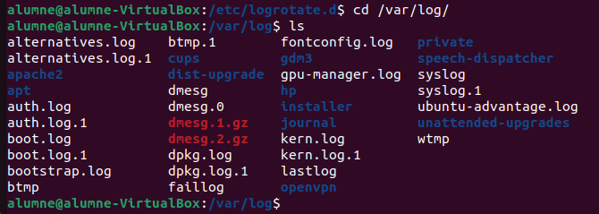
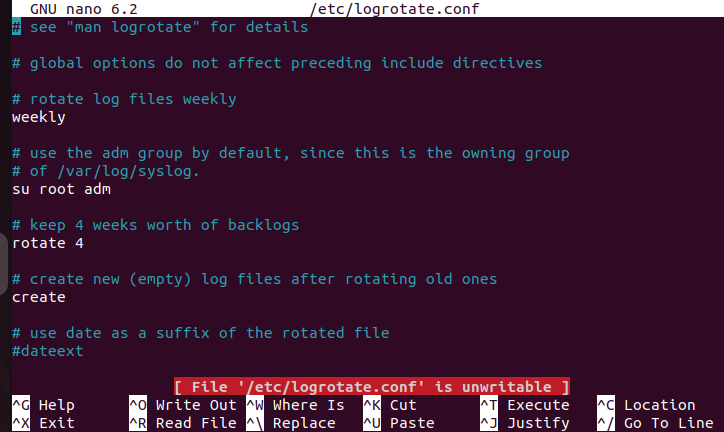
nano /etc/logrotate.conf
Si es vol establir una configuració específica per a un servei determinat, es poden definir regles personalitzades accedint al directori:
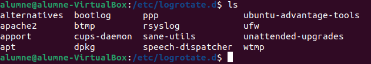
cd /etc/logrotate.d/
Per exemple, el servei Apache2 té configurada una rotació automàtica dels seus logs cada 14 dies per evitar que creixin de manera excessiva.
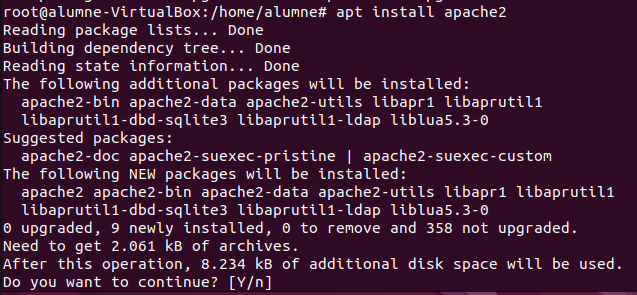
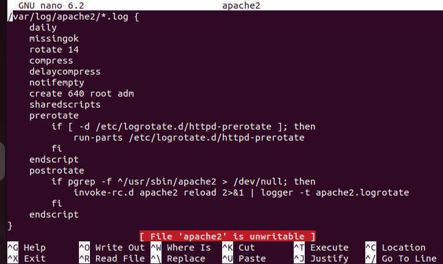
D'aquesta manera, la gestió dels logs es manté ordenada i eficient, garantint un bon funcionament del sistema.
Analització de Logs
Eines per a l'Anàlisi de Logs
Els logs es poden analitzar mitjançant eines bàsiques com cat seguit de la ruta del log, però una eina molt més potent és journalctl. Aquesta eina permet consultar els esdeveniments del sistema amb filtres específics, com ara el rang de dates, utilitzant els paràmetres --since i --until. Així, es poden visualitzar només els esdeveniments d'un període determinat. Per exemple:
journalctl --since "09:00" --until "10:00"
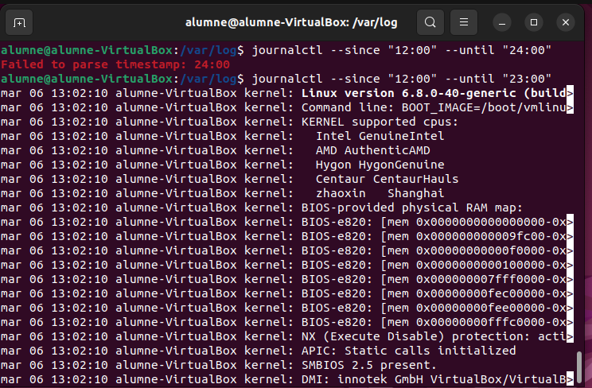
Filtrat per Dispositius
Per veure els registres associats a un dispositiu específic, com un disc, es pot executar:
journalctl /dev/sda
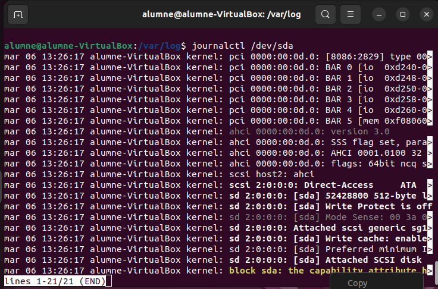
Logs Personalitzats
Logs Personalitzats: Configuració i Personalització
Amb logs personalitzats, podem modificar el comportament i les alertes dels registres del sistema segons les nostres necessitats. Això inclou:
- Canviar la configuració per defecte.
- Definir com es gestionen els diferents tipus de logs.
- Enviar els logs a un servidor centralitzat amb eines com Samba o SCP.
- Integrar-los amb Grafana per a una visualització i anàlisi centralitzada.
Edició de la Configuració
Per modificar la configuració dels logs, es pot editar el fitxer de configuració de rsyslog:
nano /etc/rsyslog.d/50-default.conf
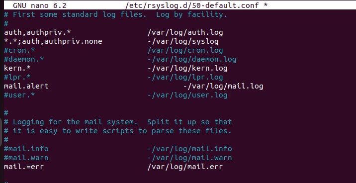
Això permet canviar la destinació dels logs, aplicar filtres o configurar alertes personalitzades.
Simulació d'Errors i Anàlisi
Per simular un error en el servei de correu i verificar on es registra el log, es pot utilitzar la comanda:
logger -i -s -p mail.err "prova error"
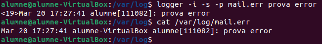
Aquesta comanda genera un missatge amb la prioritat mail.err, que es registrarà automàticament en el fitxer de logs corresponent.
Assignació de Logs segons Prioritat
Els missatges de log es registren segons la seva prioritat i configuració:
- Un missatge amb mail.err es registrarà en un log específic per a errors de correu.
- Si es canvia la prioritat a mail.alert, el missatge es registrarà a mail.log en lloc de mail.err.
Exemple d'alert:
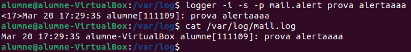
Aquesta gestió permet redirigir els logs segons el nivell d'alerta i les necessitats del sistema.
Sistema de Monitoratge de Logs amb Grafana, Loki i Promtail
Aquest document descriu la implementació d'un sistema de monitoratge centralitzat de logs utilitzant Grafana, Loki i Promtail.
Components Principals
- Grafana: Eina de visualització que permet crear dashboards interactius per analitzar les dades. (al final nomes hem relalitzat el aquesta eina)
- Loki: Sistema d'agregació de logs, dissenyat per emmagatzemar i indexar els logs de manera eficient.
- Promtail: Agent que s'executa als clients per recollir els logs (per exemple, des de
/var/log) i enviar-los a Loki.
Instal·lació de Grafana
Afegir el repositori i la clau GPG
Per instal·lar Grafana en un servidor Linux (Debian/Ubuntu), cal afegir el repositori oficial i la seva clau GPG:
sudo apt update
sudo apt install -y software-properties-common
sudo add-apt-repository "deb https://packages.grafana.com/oss/deb stable main"
wget -q -O - https://packages.grafana.com/gpg.key | sudo apt-key add -
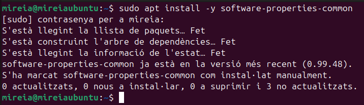
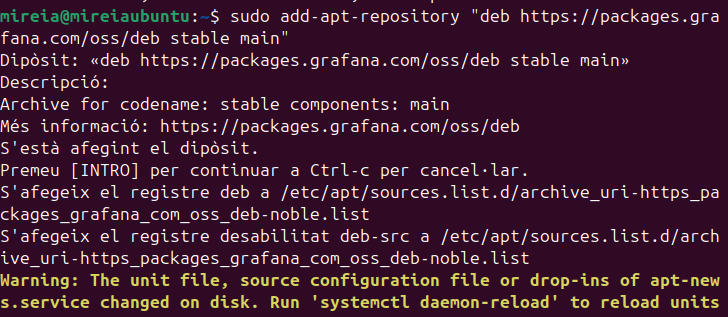
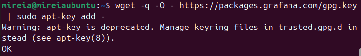
Instal·lar Grafana
sudo apt update
sudo apt install -y grafana
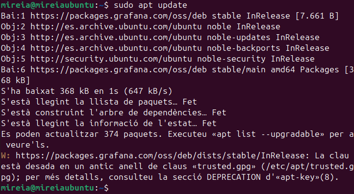
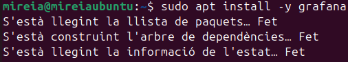
Habilitar i iniciar el servei de Grafana
sudo systemctl enable grafana-server
sudo systemctl start grafana-server
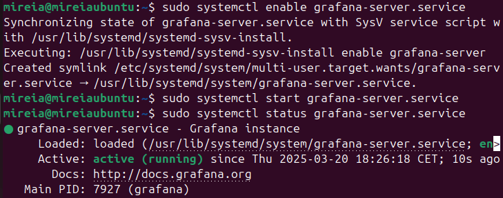
Accedir a la interfície web de Grafana
Grafana s'executa per defecte al port 3000, així que es pot accedir des del navegador:
http://<IP-del-servidor>:3000
Usuari i contrasenya per defecte:
- Usuari:
admin - Contrasenya:
admin(se sol·licitarà el canvi en el primer inici de sessió)
Configuració de Rsyslog en Linux (altre metode)
Al final hem tingut diferents problemes per a implementar loki amb grafana llavors hem buscat una alternativa mes "local". Llavors explicarem com configurar rsyslog en un entorn amb un equip receptor (servidor) i un emissor (client) per enviar i rebre logs de manera remota.
Configuració del Receptor (Servidor)
Instal·lació de Rsyslog
Actualitza el sistema i instal·la rsyslog:
sudo apt update && sudo apt install rsyslog -y
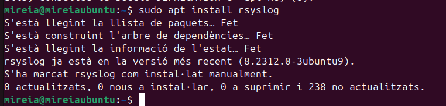
Editar el fitxer de configuració
Modifica el fitxer /etc/rsyslog.conf per habilitar la recepció de logs per UDP i TCP.
sudo nano /etc/rsyslog.conf
Descomenta les següents línies:
# provides UDP syslog reception
module(load="imudp")
input(type="imudp" port="514")
# provides TCP syslog reception
module(load="imtcp")
input(type="imtcp" port="514")
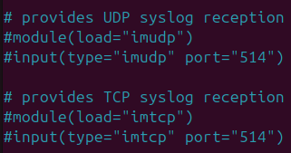
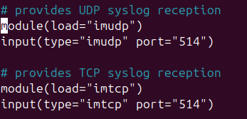
Reiniciar el servei
Desa els canvis i reinicia el servei:
sudo systemctl restart rsyslog
Obrir ports al firewall
Permet el tràfic als ports necessaris:
sudo ufw allow 514/udp
sudo ufw allow 514/tcp
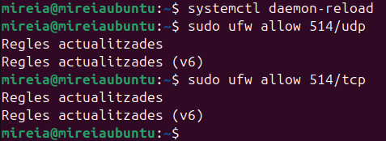
Verificar el servei
Comprova que el servei està actiu:
sudo systemctl status rsyslog
Configuració de l'Emissor (Client)
Instal·lació de Rsyslog a l'emissor
Actualitza el sistema i instal·la rsyslog:
sudo apt update && sudo apt install rsyslog -y
Editar el fitxer de configuració de l'emissor
Modifica el fitxer /etc/rsyslog.conf per especificar el servidor receptor:
sudo nano /etc/rsyslog.conf
Afegeix les línies següents al final del fitxer:
*.* @10.0.2.5:514 # Per UDP
*.* @@10.0.2.5:514 # Per TCP
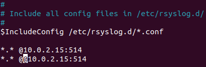
(Canvia 10.0.2.15 per l'adreça IP del receptor.)
Reiniciar el servei de l'emissor
Desa els canvis i reinicia el servei:
sudo systemctl restart rsyslog
Comprovar el Funcionament
**Verificar el Receptor
Comprova els logs en temps real:
sudo tail -f /var/log/syslog
Enviar un missatge de prova des de l'Emissor
Envia un log de prova amb la comanda logger:
logger "Prova de log des de l'emissor"
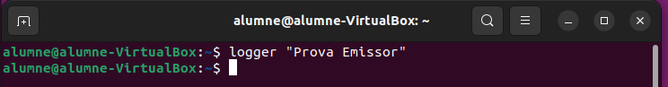
Verificar que el missatge s'ha rebut
Revisa si el missatge ha arribat al receptor:
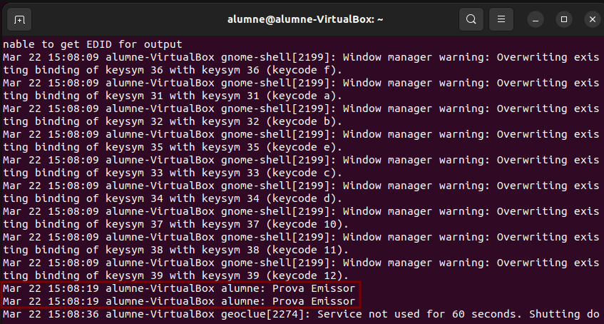